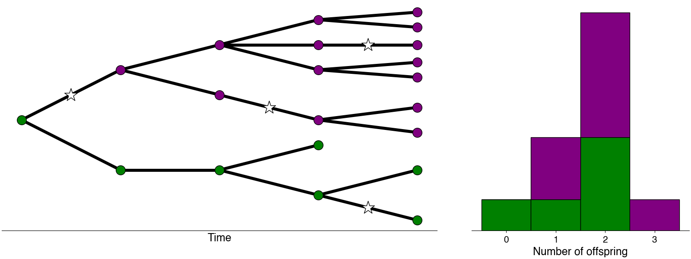

Methods for epidemic-evolutionary forecasting
Epidemic-Evolutionary dynamics
Epidemic and evolutionary dynamics can occur on similar time scales
Population dynamics and evolution can occur on similar time scales when mutation occurs rapidly along replication. The case of transmission of infectious diseases is an especially interesting example of this.
As infected individuals transmit to one another, pathogens can accumulate mutations which can change the potential for escape from immune responses or increased transmissibility and can lead to differential fitness for different genetic variants.

Inferring variant-specific growth rates and advantages
In order to quantify the fitness of genetic variants at transmission, I developed a method from learning effective reproduction numbers and variant relative growth advantages using sequence and case count data.(Figgins and Bedford 2022). We apply this method to several US states to learn about the growth advantages for SARS-CoV-2 variants of concern.
Improving evolutionary forecasts
Forecasting evolution can be useful for improving vaccination
As viruses mutate, vaccine effectiveness can wane due to immune mismatch between circulating virus strains and strains used in vaccines. For viruses like SARS-CoV-2 and influenza understanding how viruses differ in their fitness can help us to better forecast their evolution. This allows us better understand the process of evolution itself, but also has practical applications in improving vaccines.
Currently, I am tying in mechanistic models of transmission, immunity, and recovery to improve methods for evolutionary forecasting. Including more information about these processes allows us to get better estimates of relative fitness and better forecasts for virus populations.
Robust evaluation of frequency forecasts
Additionally, we develop methods for evaluating models for the purpose of evolutionary forecasts.
We’ve developed pipelines for data curation, model evaluation and comparison to see how various forecast models compare on short-term forecasts to recreate and analyze the difficulties in real-time evolutionary forecasting. Through this work, we analyzed how the data collection process might affect our ability to forecast in the short and medium-term. (Figgins, Abousamra, and Bedford. 2023.)
Tool-building enables others to learn and contribute
Automated SARS-CoV-2 Forecasts
With the team at Nextstrain, we’ve developed an open source public dashboard of interactive SARS-CoV-2 variant frequencies and forecasts globally: Nextstrain Forecasts.
Our work is fully open source, and our results are publicly available and updated daily as new data comes in. We’ve collaborated with data providers worldwide and have developed robust methodologies for forecasting SARS-CoV-2 variant dynamics.
Tools for evolutionary forecasts of variants
I’ve also spearheaded the development of a Python package called evofr. Evofr is a production-level library specializing in implementing Bayesian models for evolutionary forecasting. Evofr is designed to provide a simple interface for quick model development and scalable inference on large genomic data sets (> 2 million sequences) and time series while emphasizing ease of use and adoption by public health officials globally.
By design, evofr is modular allowing users to mix data types, models, and inference methods, allowing for backends in numpyro, pymc, custom posterior densities as well as variational inference, maximum likelihood estimation, and full Bayesian inference via MCMC.
Evofr has found use is several projects in the lab such as Nextstrain Forecasts and several academic projects including Paredes et al. Cell, 2024., Figgins, Abousamra, and Bedford. 2023., Weil et al. 2022, and Weil et al. 2024.
Building tools to make science more accessible and collaborative
In general, I am motivated by the desire to build tools to help folks answer questions they have about epidemics and how pathogens evolve. For this purpose, much of my time is dedicated to making sure the models and methods I develop are available freely and well documented, so that others can learn about them and make their own contributions to science.
Science communication and education comes with the territory
In my opinion, science is the process of asking questions, answering questions, and presenting information. Further, I believe an important part of the process of doing science or really any kind of inquiry is enabling others to take action. To me, this primarily means creating resources for others to use whether that be educational material, a new software package, or any other tool.